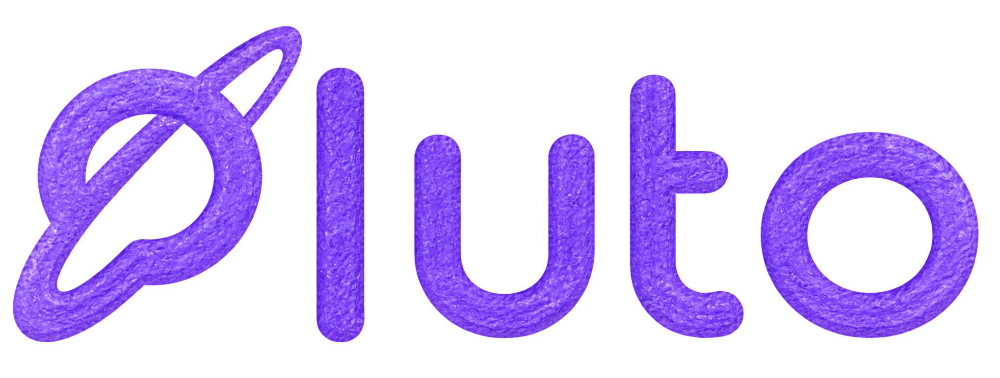

Featured match97%
MC
Maya Chen
Product systems for complex financial and healthcare services.
Verified independent specialists receive qualified fixed-price opportunities, clear scope, and funded milestone protection—without paying to apply.
A portfolio-led discovery experience gives clients enough signal to make a thoughtful shortlist.
Product systems for complex financial and healthcare services.
Focused identity systems for technical companies.
Evidence-led product strategy for growing teams.
Calmer customer journeys for complex services.
Accessible frontends and production design systems.

Join the talent verification flow or return to your workspace.